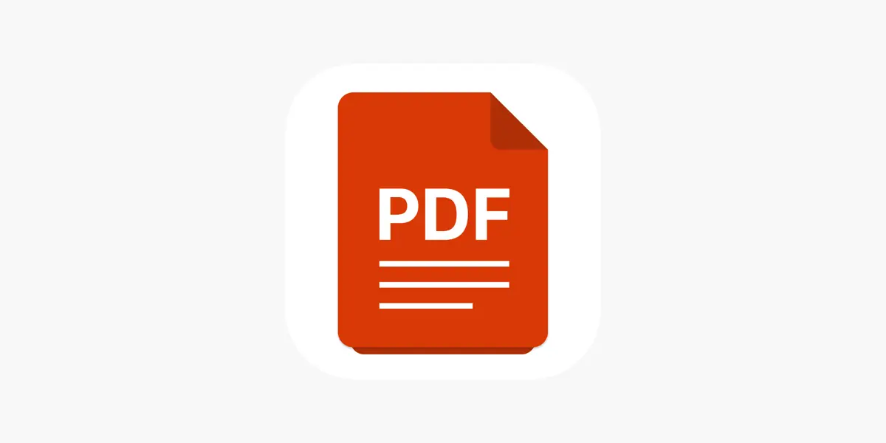

<div class="flex items-center justify-center w-full h-full py-24 sm:py-8 px-4">
  <div class="w-full relative flex items-center justify-center">
    <button
      aria-label="slide backward"
      (click)="goPrev()"
      class="absolute z-30 left-0 ml-8 text-green-600 focus:outline-none focus:bg-green-500 focus:ring-2 focus:ring-offset-2 focus:ring-green-500 cursor-pointer"
    >
      <svg
        width="18"
        height="18"
        viewBox="0 0 8 14"
        fill="none"
        xmlns="http://www.w3.org/2000/svg"
      >
        <path
          d="M7 1L1 7L7 13"
          stroke="green"
          stroke-width="3"
          stroke-linecap="round"
          stroke-linejoin="round"
        />
      </svg>
    </button>
    <div class="w-full h-full overflow-x-hidden overflow-y-hidden">
      <div
        id="slider"
        class="w-full h-full flex items-center justify-start transition ease-out duration-700"
      >
        <ng-container *ngFor="let item of items">
          <div class="flex flex-shrink-0 relative w-full max-w-xl">
            
            <a
              class="bg-gray-800 bg-opacity-30 absolute w-full h-full p-6"
              [href]="sanitizePdfUrl(item.file)"
              target="_blank"
            >
              <h2
                class="lg:text-xl leading-4 text-base lg:leading-5 text-white"
              >
                {{ item.fileName }}
              </h2>
              <div class="flex h-full items-end pb-6">
                <h3
                  class="text-xl lg:text-2xl font-semibold leading-5 lg:leading-6 text-white"
                >
                  {{ item.fileType }}
                </h3>
              </div>
            </a>
          </div>
        </ng-container>
      </div>
    </div>
    <button
      aria-label="slide forward"
      (click)="goNext()"
      class="absolute z-30 right-0 mr-8 focus:outline-none focus:bg-green-500 focus:ring-2 focus:ring-offset-2 focus:ring-green-500"
    >
      <svg
        width="18"
        height="18"
        viewBox="0 0 8 14"
        fill="none"
        xmlns="http://www.w3.org/2000/svg"
      >
        <path
          d="M1 1L7 7L1 13"
          stroke="green"
          stroke-width="3"
          stroke-linecap="round"
          stroke-linejoin="round"
        />
      </svg>
    </button>
  </div>
</div>
